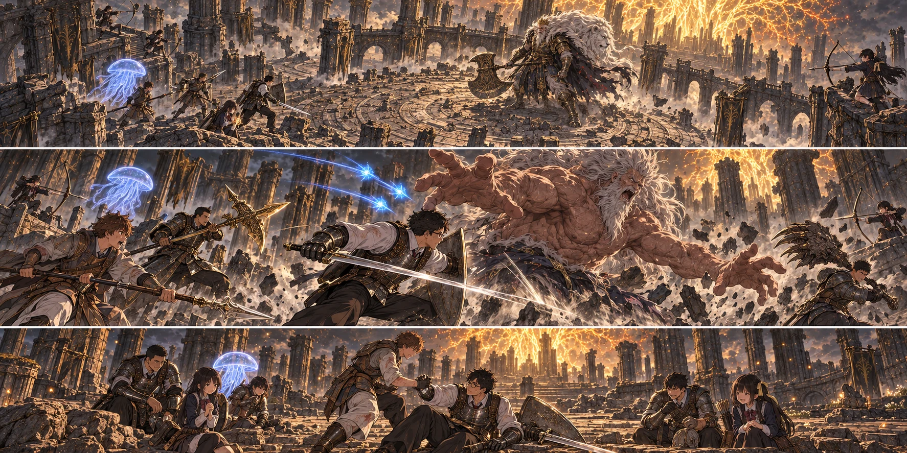

DAY96 / TURN1−106
先生の帰り道を、空けておけ。

「先生が戻る場所、空いてます！」
女王の閨へ戻る前、私は教会の床に二本の線を引いた。一本は戦場の指揮。もう一本は、私が帰らなかった場合の手順だった。
「私が倒れたら、蓮が全体を見る。前は陽太、健太と交代。勝てるなら続けろ。先生を助けるためだけに、全員で止まらなくていい」
返事が、すぐには来なかった。最後に蓮が頷いた。「引き継ぎます。でも、生きてる間も口を出しますよ。先生だけだと、また全部背負うから」
翼には未解放のアギール湖北を指した。死亡を遠くから知らせる手段はない。誰かが帰って報告して、初めて救援が動く。既に点いた祝福に戻れば復活できる、という話でもない。彼は紙を折り、懐へ入れた。「使わなかったら、この紙は捨てません。明日も使えるようにします」
私は一瞬だけ、死ぬことを予定表の一行にできる気がした。だが剣帯を締める指は冷たかった。復活できる可能性と、死ぬのが怖くないことは、まるで別だった。
【DAY96・朝。主力十三名、女王の閨（灰都）へ】登録済みの祝福を経て、再び黄金樹の根元へ出る。灰の積もった階段の先に、円形の石庭が開けていた。外周には折れた柱。正面には王座と、燃える黄金の向こうへ続く入口。足場も逃げる余白も、前回と同じだ。変わったのは、こちらの手にあるものだった。
花は短弓の弦を一度だけ引き、戻した。直人は大竜爪を両手で持ち直す。大地の黄金のハルバードは、刃の重みまで以前のままだ。それでも、砥ぎ直された先端を朝の光が細く走った。
石庭の奥で、巨躯が斧を持ち上げた。白い獅子を背負う王は、戻ってきた私たちを見渡した。
「また来たか。己の力を持ち寄る者たちよ。そなたらは、誰のために王を求める」
私は盾を上げた。「この先へ進めなければ、帰れない者がいます」
王が低く笑った。「ならば示せ。その願いを、ここから先へ運べるだけの力を」
【第一局面：5＋4＋5＝14】大地が誓いを立てる。黄金が私と直人と彼自身を包み、青いクララが外周に浮かんだ。陽太と健太は私の真後ろへ重ならない。花と千夏も、向かい合って矢を交差させる位置を避けた。
斧が下がる。その直前に、王の足が石を踏む。私は刃を見るのをやめ、踵を見た。「足！」。石庭を走った衝撃を、前列が跳び越す。着地した私の盾に斧の余波が叩きつけられたが、正面で押し返そうとはしなかった。横へ流れ、そのまま剣を入れる。
前回なら、刃が浅く滑って終わった角度だった。今度は、手首に確かな重さが返ってきた。王がこちらを向く。その短い間に、槍が一本、斧を引く腕の外から届く。次の一本は同時には出ない。先の穂先が戻ってから刺す。
「紬、空けた！」。陸が退き、直人も足を引く。紬は自分の周囲に味方がいないことを確かめてから、膝を沈めた。石の割れ目をなぞるように幾本もの火柱が噴き上がる。一直線の光ではない。逃れる方向を塞ぐ、短い炎の林だった。彼女は詠唱を終えると、すぐに味方の側へ戻った。
王は炎の向こうから斧を振り抜いた。全員で追いかけず、蓮の声で攻撃する組だけを替える。弓と術が途切れない。前回より早く、あの巨大な斧の動きに間が生まれた。
王が立ち止まる。背の獅子が消え、斧が役目を失う。巨大な両手が開かれた時、陽太の肩が一度だけ硬くなった。
【第二局面：6＋6＋5＝17】あの手に掴まれた時、地面の方が自分へ飛び上がってくるように見えた。陽太はそれを覚えている。だから今度は、伸びてくる指の先を見続けなかった。腰が沈む。肩が開く。そこから来る。
「先生、右は駄目だ。俺の方へ！」
私は声の方へ一歩踏み、そこから斜めに潜った。頭の後ろで両腕が空を掴む。陽太は私を庇う位置へ盾を差し込まず、王の脇へ槍を見せた。掴む相手を替えさせる。それから、健太の声に合わせて離れる。三人で同じ場所を守るのではなく、一人ずつ危ない場所を明け渡した。
第二形態へ移る間に、葵が前衛六人へ施した恵みはまだ残っていた。彼女は柱の陰で青瓶を一つ飲み、次の即時回復の力を用意する。全員を自分の周りへ呼び集めれば踏みつけに巻き込む。必要な者だけを呼ぶ、と決めたまま、まだ呼ばなかった。
ホーラ・ルーが吼え、石庭が跳ねた。陽太は着地の時に槍を突かなかった。もう一度跳ぶための足を残した。二度目の衝撃のあと、健太の槍が届いた。
クララが側面で揺れる。毒が効いた印はない。それでも、王の視線が一度だけ青い影を追った。消されずに残ったその一度を、千夏が射撃に変えた。
【決着局面：6＋6＋6＝18】王は膝を落としかけて、なお踏み留まった。ここで取り囲めば勝てる。そう思わせる隙の向こうで、彼の両手が再び広がる。
私は踏み込んだ。下がれば、こちらが立て直す間に王も立て直す。剣を当て、顔をこちらへ向けさせる。最悪、私を掴ませても、その間に後ろが打てる。教会で言ったことを、初めて本当に自分の体で払うつもりだった。
「先生、そのまま斜め！ 戻る場所、空いてます！」
蓮の声がした。花が弓を下げて射線を一つ消し、陸がその場所から退く。陽太が槍を引いた。私の背中に、誰もいなかった。逃げ道を残したまま、彼らは王を叩こうとしていた。
私は踏み込みを止めず、剣を振ったあとで肩を捻った。巨大な手が鎧のすぐ横を過ぎる。その横顔へ、悠の三つの流星が高い弧を描いて迫った。拓海の魔力弾は私が抜けたのを見てから走った。
直人の大竜爪が振り下ろされ、王の片膝が石に触れる。大地はそこへ刃を重ねた。黄金のハルバード。何十日も前、皆で倒した騎士から受け取り、持てる体を作り、ようやく研ぎ上げた武器だった。
王の手は、もう私を追ってこなかった。
ホーラ・ルーは石庭に片手をついたまま、私たちを見た。十三人の、まだ誰も欠けていない輪を。「……よい。誰かを残すためではなく、共に先へ行く力か」
巨大な影がほどけたあとも、しばらく誰も近づかなかった。蓮が名前を呼ぶ。一人ずつ返事が返る。十三人目まで数え終えて、ようやく私は盾を地面に置いた。
「先生」陽太が手を差し出した。「死んでもいい、って言ったのは先生ですから。俺たちが、死んでほしいって言ったわけじゃないです」
私は、その手を取った。立ち上がる時になって膝が震えた。怖かった。戻れないところまで踏み込むつもりだった。そのつもりだけは嘘ではなかったのに、今は生きて立っていることが、どうしようもなく嬉しかった。
【王座の祝福】現れた光に、十三人で触れた。灰に埋もれる前の王都で見た記録とは別に、今、ここへ戻るための祝福を開く。新しく蘇らせる者はいない。今日は移動と休息のために、その光を使えた。
三万のルーンと、ホーラ・ルーの追憶が残った。私は追憶を開かなかった。前方には、黄金の入口がある。そこへ入れば次は二連戦になる。瓶を休息で戻せても、消費した矢や刃の摩耗は戻らない。まずは記録し、全員で教会へ帰った。
夕方の教会には、六人の救援役と、十四人の生活を守る者がいた。今日も狩りに出た組が食事を増やし、残った者が水を処理していた。翼は私の顔を見て、懐の紙に一度だけ手を当てた。取り出しはしなかった。
「王に勝った」と伝えると、歓声の先に、誰かの安堵の息が聞こえた。私たちが帰れる場所を守っていた二十人にも、同じだけ長い一日があった。
【DAY96・夜】新たな死者も、休息後に残る負傷者もいない。ルーンは三万四千七百四十二。矢は三百六十六。食事は六十二人分。武器の強化値は保たれ、使った分だけ耐久は減った。クララも休息で次の召喚を待つ。
作戦帳の残りの欄は、ラダゴンとエルデの獣。ひと続きの戦いが一つ。DAY99までを使う計画なら、あと三日ある。私は最後のページを開き、生徒たちの名前をもう一度、全員分書いた。
今回の判定記録
| 判定 | 出目 | 補正 | 合計 |
|---|
| 第一王・斧と踏みつけ | 5+4 | 5 | 14 |
| ホーラ・ルー・掴みと交代 | 6+6 | 5 | 17 |
| 最後の押し込み | 6+6 | 6 | 18 |
| 基地の近場狩猟 | 5+4 | 4 | 13 |
抽選前の条件 · 抽選結果